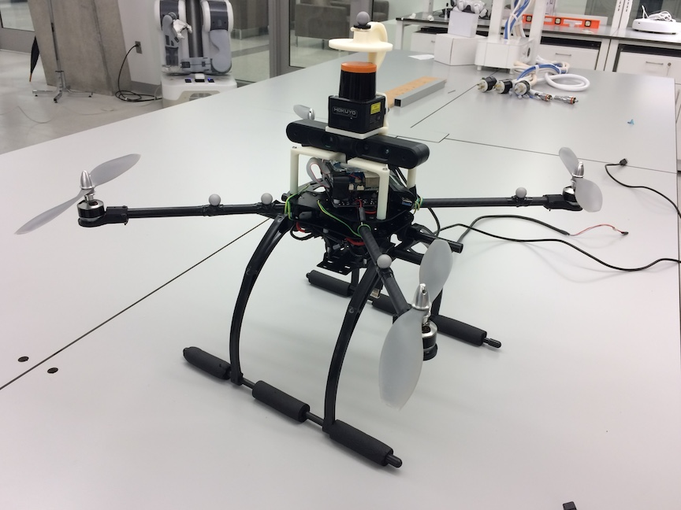
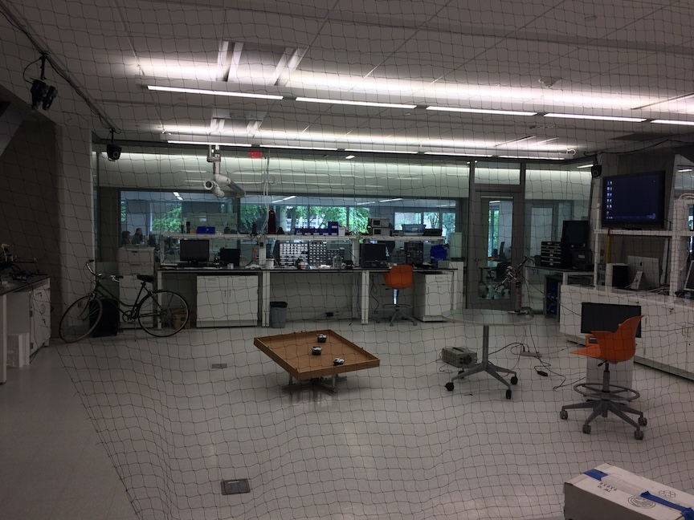

Experiments
Quadrotor development

Quadrotor unmanned aerial vehicle

Indoor flight test facility
Quadrotor hardware and flight software have been developed in the lab. There have been several variations, but the most current system is composed of
- Computing Module: NVidia Jetson TX2
- IMU: VectorNAV V100
- Speed Controller: MikroKopter BL CTRL 2.0
- Motor: Tiger Motor MN3110-17 700kv
- Compatible Sensors: Hokuyo Lidar, Microsotft Kinect, Asus Xtion, etc
- Flight Software: multithreading, g++
For indoor flight test facility, Motion Capture (MOCA) laboratory is a 1200 square feet space located at the basement of the Elliott Building, and it is dedicated to research in high quality visual sensing. State-of-art 26 VICON cameras are situated around the room, which capture the position and orientation of unmanned aerial vehicles (UAVs). The second facility is at the second floor of the Science and Engineering Building with 6 VICON cameras.
Flight Experiment Video
Quadrotor back flip
Laser guided landing on an inclined surface
Autonomous aerial exploration
Autonomous ground exploration
Autonomous aerial transportation
Constrained attitude control